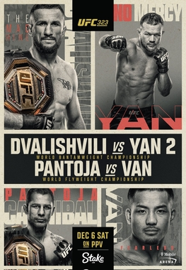
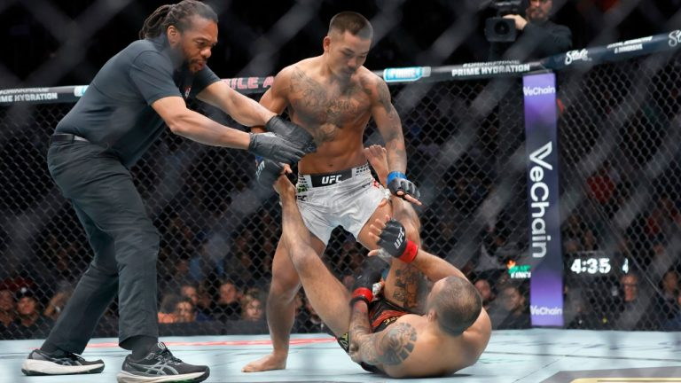

UFC 323 Dvalishvili vs. Yan 2 Recap
Saturday 12.06.2025 at 06:00 PM ET • Las Vegas, Nevada, United States
Table of Contents
- Summary
- Main Card
- Prelims
Summary
UFC 323 served as the explosive final major numbered event of 2025, delivering a 7.7/10 spectacle that perfectly blended championship drama, career-altering knockouts, and the raw chaos that defines mixed martial arts at its best. The card was bookended by seismic shifts in the UFC landscape, beginning with Petr Yan's masterful redemption arc to reclaim bantamweight gold and ending with the shocking, anticlimactic injury that crowned Joshua Van as the youngest flyweight champion in UFC history.From the opening prelim to the main event, UFC 323 was a showcase of contrasting narratives: legends facing potential retirement, hyped prospects proving their mettle, and contenders solidifying their status. The night featured a remarkable 10 finishes across 14 fights, with only four bouts going the distance. Standout performances included Tatsuro Taira's statement win to earn a title shot, Jalin Turner's violent return from retirement, and Fares Ziam's dominant display that exposed both his potential and a questionable refereeing decision.
While some fights like Vettori-Ferreira failed to deliver expected fireworks, the card's overall pace and drama never wavered. We witnessed potential career-ending performances from veterans like Edson Barboza and Henry Cejudo, while prospects like Mansur Abdul-Malik and Manuel Torres made emphatic statements about their readiness for ranked competition. The event successfully reset multiple divisions and set the stage for compelling matchups in early 2026, making it a fittingly memorable conclusion to the year's major UFC programming before the promotion's winter hiatus.
Main Card
Petr Yan vs. Merab Dvalishvili
Result: Decision, Unanimous at 5 Rounds, 25:00 Total
The main event was a clash between a dominant champion and a former king seeking redemption. Merab Dvalishvili, defending his title for a historic fourth time in 2025, aimed to repeat his prior victory over Petr Yan. Yan, however, had battled back from a three-fight skid for this final chance at UFC gold. From the outset, Yan’s strategy was clear: stuff the takedowns and force the grappling ace to stand and trade.

Yan executed his plan masterfully, consistently denying Merab's relentless takedown attempts and making him pay on the feet. While Merab showed incredible heart, his face became a bloody mess from Yan's crisp jab and powerful right hands. The former champion also inflicted heavy damage to the body, slowing Merab's legendary pace. Yan even showcased his own improved takedown defense and grappling scrambles, reversing positions and surviving a late guillotine attempt. After five grueling rounds, Yan’s striking dominance was undeniable, crowning one of the sport's great comeback stories as he reclaimed the bantamweight throne.
This epic rematch proved Yan is back at the pinnacle of the sport. While Merab’s title reign was historic, his inability to impose his wrestling was his downfall. Given Merab's past dominance and his graciousness in granting this rematch, an immediate trilogy fight is the logical next step once both warriors have healed. For now, Petr Yan stands atop the division once more.
Joshua Van vs. Alexandre Pantoja
Result: KO/TKO, Arm Injury From Takedown at 0:26 Round 1 of 5

The co-main event ended in bizarre and unfortunate fashion, altering the flyweight landscape in seconds. Champion Alexandre Pantoja, one of the division's all-time greats, faced the young, active surging contender Joshua Van. Van, the first fighter born in the 2000s to fight for a UFC title, hoped to dethrone the king who had lapped the division.
The fight lasted mere moments. In the initial exchange, Pantoja fell to the canvas awkwardly, suffering what appeared to be a severe arm injury—potentially a break or dislocation—that rendered him unable to continue. Just like that, Joshua Van was declared the winner and new UFC flyweight champion by TKO.
It was an anticlimactic and controversial conclusion. While Van is a worthy contender, winning the title via injury in 26 seconds leaves a cloud over his championship. The focus now shifts to Pantoja's recovery at 35 years old and the new champion's first defense. Tatsuro Taira, who won earlier in the night, is the clear next challenger. The promotion will likely look to book Van vs. Taira very early in 2026 to establish a clear, active champion.
Tatsuro Taira vs. Brandon Moreno
Result: KO/TKO, Punches From Back Mount at 2:24 Round 2 of 3, 7:24 Total
This flyweight clash was a title eliminator, with the UFC desperate for a fresh contender for the winner of the co-main. The veteran Brandon Moreno, a former champion with three losses to Pantoja, looked to derail the hype of Japan's Tatsuro Taira. The first round was a tactical grappling battle, with Moreno even catching Taira in a triangle choke, but Taira remained calm from the bottom.
In the second round, Taira found his opening. He secured a takedown, transitioned to Moreno's back, and locked in a body triangle. From there, he began to land heavy, unanswered punches. Referee Mark Smith stepped in, awarding Taira a TKO victory from back mount. While some argued the stoppage was slightly early, Taira's control and the potency of his strikes left little doubt about the outcome.
With this win, Tatsuro Taira has unequivocally earned the next flyweight title shot. His composure under pressure and finishing ability make him a fascinating challenge for any champion. For Moreno, this is a devastating setback that leaves him far from the title picture. He remains a high-level gatekeeper, but his path back to gold is now exceedingly difficult.
Payton Talbott vs. Henry Cejudo
Result: Decision, Unanimous at 3 Rounds, 15:00 Total
 This bout pitted a rising prospect against a legendary former champion potentially making his last walk. Henry Cejudo, 0-3 since returning from retirement, faced the dynamic but grappling-questioned Payton Talbott. From the start, Talbott showed improved skills, stunning Cejudo early and even taking the Olympic gold medalist wrestler down twice in the first round.
This bout pitted a rising prospect against a legendary former champion potentially making his last walk. Henry Cejudo, 0-3 since returning from retirement, faced the dynamic but grappling-questioned Payton Talbott. From the start, Talbott showed improved skills, stunning Cejudo early and even taking the Olympic gold medalist wrestler down twice in the first round.
Cejudo displayed incredible toughness, weathering violent storms in multiple rounds and scrambling back when hurt. However, Talbott's striking was consistently sharper and more damaging. He cut Cejudo open, landed heavy knees, and piled on punishment against the cage. While Cejudo never stopped trying, his offense couldn't match Talbott's volume and power across three rounds.
Payton Talbott proved he has evolved beyond a mere "can crusher," showcasing improved wrestling and composure against a former champ. He's ready for a step up, but a title eliminator might be premature; a fight with another established contender like Bautista or Vera makes sense next. For Henry Cejudo, this likely signals the end of a Hall of Fame career, closing the chapter on "Triple C."
Jan Błachowicz vs. Bogdan Guskov
Result: Ends in a Draw, Majority at 3 Rounds, 15:00 Total
The main card opener was a classic striker vs. striker battle between light heavyweight legend and rising contender. The 42-year-old Jan Błachowicz, fighting for his career, used his patented low kicks against the power of Bogdan Guskov. The first round was a feeling-out process, but the fight ignited in the second when Guskov dropped Jan with a straight right and unleashed a dominant ground-and-pound assault that earned him a 10-8 round.
Showing the heart of a champion, Blachowicz stormed back in the third. He hurt Guskov on the feet and even scored a knockdown with just ten seconds left, nearly securing a miraculous comeback finish. When the scorecards were read, the dominant second round for Guskov balanced Jan's winning first and third, resulting in a majority draw.
The draw was a fair result that keeps both men relevant. For Guskov, it shows he can hang with a former champ, even if he didn't get the win. For Blachowicz, it proves he still has the legendary Polish power and shouldn't be counted out. An immediate rematch would be a compelling option for both fighters and the division.
Prelims
Manuel Torres vs. Grant Dawson
Result: KO/TKO, Uppercut to Ground Punches at 2:25 Round 1 of 3
This lightweight prelim was a stark reminder of the dangers in MMA's striker vs. grappler matchups. Grant Dawson, the relentless grinder on a three-fight streak, needed a win to break into the rankings. Manuel Torres, a powerful Mexican prospect, was looking for a signature victory. Dawson showed some improved striking early, but his overhand left him exposed.
Torres capitalized perfectly. He landed a clean overhand right that stunned Dawson, followed him to the canvas, and finished the fight with ground and pound. It was a brutal and decisive end, echoing Dawson's prior loss to Bobby Green. This stunning knockout derails Dawson's title aspirations and pushes him far back in the queue.
For Manuel Torres, this is a massive career leap. Knocking out a durable fighter like Dawson will earn him a ranking and a high-profile matchup, perhaps against someone like Dan Hooker. He proved he has the power to change a fight in an instant.
Chris Duncan vs. Terrance McKinney
Result: Submission, Anaconda Choke at 2:30 Round 1 of 3
This lightweight scrap was pure, unadulterated chaos from the first bell. Terrance McKinney came out guns blazing, hurting Chris Duncan early with a flying knee and head kick. Duncan survived, reversed the momentum with a nasty elbow that dropped McKinney, and then showcased his grappling by sinking in a tight anaconda choke for the tap.
There was no gameplan here—just two explosive athletes trying to take each other's head off. Duncan's composure to survive the early storm and find a finish proves his mettle. While this style may not work against the division's elite technicians, it makes for must-watch TV.
Duncan should get a ranked opponent or a fighter just outside the top 15 next. For McKinney, the verdict remains the same: he is one of the most exciting fighters on the roster, but his all-or-nothing approach will lead to highlight-reel wins and brutal losses. Give him another action fighter and let them scrap.
Maycee Barber vs. Karine Silva
Result: Decision, Unanimous at 3 Rounds, 15:00 Total
In a women's flyweight bout with title implications, Maycee Barber returned from a serious health scare to face Karine Silva. The fight was a messy, tactical affair with long periods of inactivity on the feet and sporadic grappling exchanges. Barber did her best work on the ground, achieving mount in the first and controlling Silva's back in the second to land ground and pound.
Silva had her moments, including a tight guillotine attempt and a flush upkick to Barber's chin that went unpenalized. However, Barber's control time and slightly more effective aggression likely swayed the judges. It was a tough fight to score, lacking in sustained action or clear dominance.
Barber gets the nod to stay in the title hunt, but the performance didn't scream "future champion." A fight with a top contender like Manon Fiorot is logical next. For Silva, the loss exposes a ceiling; she is solid but may struggle against the division's elite. A step back in competition might be needed.
Fares Ziam vs. Nazim Sadykhov
Result: KO/TKO, Elbows and Follow-up Punches at 4:59 Round 2 of 3, 9:59 Total
This lightweight clash featured two surging prospects, with the winner poised for a ranked opponent. Fares Ziam used his significant size and reach advantage perfectly against Nazim Sadykhov. Ziam controlled the grappling, threatening submissions and taking Sadykhov's back. In the second, his striking took over.
Ziam landed a brutal elbow that dropped Sadykhov and followed with punishing ground and pound until the final bell. Referee Jason Herzog allowed the round to end, only to then stop the fight between rounds. This led to criticism, as Sadykhov absorbed unnecessary damage if the fight was deemed over.
Regardless of the questionable stoppage, Fares Ziam looked phenomenal. His blend of size, power, and grappling makes him a nightmare matchup. He's ready for a top-15 name, with Michael Chandler being a fittingly violent next step. For Sadykhov, his size disadvantage at lightweight was glaring; he may need to consider a drop to featherweight to reach his potential.
Brunno Ferreira vs. Marvin Vettori
Result: Decision, Unanimous at 3 Rounds, 15:00 Total
This middleweight bout was a battle of fading star against rising, but inconsistent, power. Marvin Vettori, on a three-fight skid, faced the heavy-handed Brunno Ferreira, who missed weight by three pounds. The fight failed to deliver the expected fireworks, devolving into a cautious jab-fest with low output.
Ferreira landed the harder shots, bloodying Vettori's face, while Vettori's takedown attempts were easily shrugged off. A late third-round flurry from Vettori that stumbled Ferreira provided the only real drama in an otherwise tedious affair. Ferreira did just enough to get his hand raised.
The fight exposed both men's limitations. Ferreira gets a ranked opponent by default, but his performance didn't inspire confidence against the division's best. For Vettori, this should be the end of the line in the UFC. Once a title challenger, he now lacks the offensive tools to compete at the highest level and delivers painfully dull fights.
Jalin Turner vs. Edson Barboza
Result: KO/TKO, Punches at 2:24 Round 1 of 3
This bout marked the return of a prodigious talent and potentially the end of a legendary career. Jalin Turner came out of retirement to face the iconic but fading Edson Barboza. Turner, a physical specimen, looked sharp and violent from the start. He cut Barboza badly on the head and then dropped him with a nasty right hand.

Barboza showed heart to get up, but Turner gave him no space, walking him down against the cage and unleashing a relentless barrage of punches until referee Herb Dean mercifully stepped in. It was one-way traffic, a stark mismatch between a rising force and a veteran past his prime.
Jalin Turner is officially back and looks like a future title contender at 155 pounds. A rematch with Ignacio Bahamondes, to avenge his last loss before retirement, is a compelling next step. For Edson Barboza, a legend of the sport, this brutal knockout on a three-fight skid should signal a graceful retirement.
Iwo Baraniewski vs. Ibo Aslan
Result: KO/TKO, Right Hook to Ground Punches at 1:29 Round 1 of 3
This middleweight prelim was absolute, glorious chaos. Undefeated prospect Iwo Baraniewski made his debut against the always-game Ibo Aslan, who was fighting for his UFC life. The fight opened with a wild exchange where both men were seemingly out on their feet, only to recover and knock the other down moments later.
It was a back-and-forth rock'em-sock'em robots match until Baraniewski landed a hard right hook that finally put Aslan down for good, following up with shots to secure the win. Referee Mark Goddard could have stopped the fight at several points during the madness but let the warriors battle.
Iwo Baraniewski is 1-0 in the UFC with a memorable win, but he cannot brawl like this against the division's elite strikers—he'd get seriously hurt. For Ibo Aslan, the loss likely means his release, but he earned respect and another fight with his fearless, all-action style. He comes to scrap, and the fans will miss him.
Mansur Abdul-Malik vs. Antonio Trócoli
Result: Submission, Standing Guillotine Choke at 1:09 Round 1 of 3
The middleweight opener was a quick showcase for a terrifying prospect. The undefeated Mansur Abdul-Malik charged across the octagon and cracked the veteran Antonio Trócoli with a vicious 1-2. He immediately took the fight down, applied crushing pressure, and when Trócoli tried to stand, Abdul-Malik snagged a standing guillotine choke for the lightning-quick tap.
It was a flawless, violent performance that lasted just over a minute. Abdul-Malik lived up to his reputation as a power-puncher who hunts finishes, showing his grappling prowess as well.
Mansur Abdul-Malik is a legitimate problem in the middleweight division. He is now 4-0-1 in the UFC and ready for a significant step up in competition. It's time to test him against a ranked, experienced opponent to see if he has true contender potential. For Trócoli, years of inactivity culminated in a loss that likely ends his UFC tenure.
Mairon Santos vs. Muhammad Naimov
Result: KO/TKO, Jab-cross Combo at 0:21 Round 3 of 3, 10:21 Total
The night's first fight set the tone with a brutal finish after a slow start. Top featherweight prospect Mairon Santos, despite missing weight, faced the more experienced Muhammad Naimov. The first two rounds were a grueling, low-output affair with excessive cage clinching and little effective offense from either man, particularly Naimov.
Santos controlled the pace and landed the better shots, but the fight lacked urgency. That changed instantly in round three. Santos came out, cracked Naimov with a clean jab-cross combination that sent him crashing to the canvas, prompting an immediate stoppage from referee Jason Herzog.
Mairon Santos moves to 17-1 and continues to build hype, though his weight miss is a concern. He's ready for a step up against a ranked featherweight. For Muhammad Naimov, the loss exposes critical flaws; he offered no threat and was thoroughly outclassed. He needs a complete overhaul of his offensive strategy before his next bout.